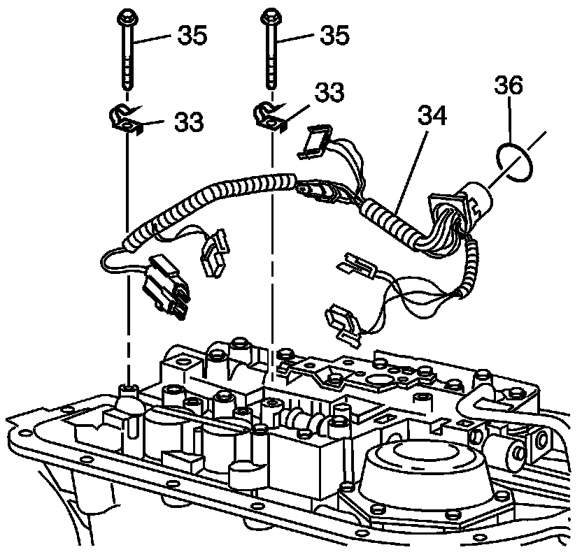

Transmission Wire Harness Removal
Transmission Wire Harness Removal

1. Disconnect the wire harness connectors from the electrical components.
2. Remove the transmission wiring harness assembly (34) from the wiring harness clamps (33).
Notice: If the transmission wiring harness assembly does not need servicing, do not remove the assembly from the case. Excessive force may damage the pass-through connector.
3. Remove the transmission wiring harness assembly (34) from the case. Use a 1-5/16 inch 12-point socket in order to release the pass-through connector retaining clips from the case.
4. Remove the pass thru connector O-ring seal (36) and replace.